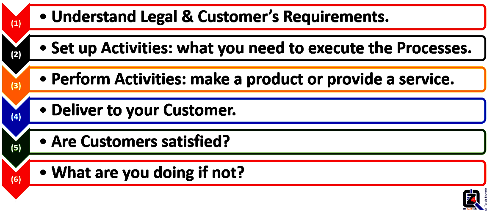
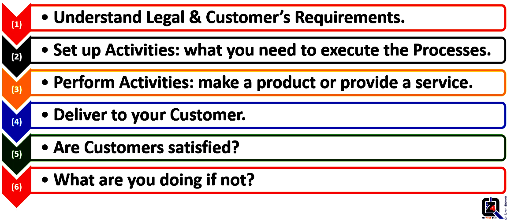

What is a Quality Management System?

Welcome to the 4Z-Pedia. Let’s explain the meaning, definitions, and strategies of the quality management system as short and as simple as possible.

Pretend for a minute that you decide to start your own Pizza store, it doesn’t matter if you choose to run it on your ow, or if you purchase a franchise. In all cases, a Pepperoni Pizza, will need pepperoni, cheese, sauce, and Pizza dough.
However, when you go to different Pizza places, you feel a difference. On the surface, they should be the same, but depending on what type of Pizza store you choose to be, some of the ingredients &/or recipes can be different.
Each Pizza store has its own way of doing things. How the Pizza is put together can be different, how the order is taken, handled and delivered, will be different. Each Pizza store, in its own way, has deployed ways of doing things (processes), to ensure an order for a Pepperoni Pizza is understood and can be executed by their team.
In the case of the franchises, the key activities may have been predefined for you (standardized). In the case of the local store, the activities are self-developed (designed by you).
All the activities (processes) that a Pizza store puts together to ensure that a customer receives what he orders, is indeed what we call, a Quality Management System. You might just call it “the way we do business,” and that is precisely right. A Quality Management System (QMS) is an essential part of any business, but most people don’t call it that.
Therefore, we could say that: a quality management system (QMS) is the set of processes or activities that enable a business to meet these requirements.
Quality Management Systems are implemented to ensure customer satisfaction. The company can create their own recipe for success.
You define the processes that help you deliver your product or service in a consistent manner, while meeting at the same time defined requirements. For Example, in the Pizza store, you may have the following steps in place when building an order:

Often quality management systems (QMS) are associated with having documents – such as procedures, work instructions, forms, etc. They may be in a digital or a printed format. Documentation is a component of the QMS, but not the center of it. In the case of the Pizza store, we can argue that all the documents you need are, the Pizza recipes and a clear manner to convey “special” order requirements (for example light sauce, extra cheese, etc.).
Keep your QMS simple:
When defining your own QMS (quality management system), keep it simple. We have found that many companies and organizations simply do not implement QMS, due to the over-complication of procedures, which eventually never get off the ground. Start simple and grow as your business grows.
If you are interested in defining, re-defining, or evaluating your Quality Management System,
Email us today at: support@the4z.com. We are here to help you increase customer satisfaction.
Call 4Z for Quality today at (also on WhatsApp):
+973 3399 5807 or +90 5050 3040 16.
Quality Management System Overview:
Pretend for a minute that you decide to start your own Pizza store.
Pretend for a minute that you decide to start your own Pizza store, it doesn’t matter if you choose to run it on your ow, or if you purchase a franchise. In all cases, a Pepperoni Pizza, will need pepperoni, cheese, sauce, and Pizza dough.
However, when you go to different Pizza places, you feel a difference. On the surface, they should be the same, but depending on what type of Pizza store you choose to be, some of the ingredients &/or recipes can be different.
Each Pizza store has its own way of doing things. How the Pizza is put together can be different, how the order is taken, handled and delivered, will be different. Each Pizza store, in its own way, has deployed ways of doing things (processes), to ensure an order for a Pepperoni Pizza is understood and can be executed by their team.
“Defined activities are in place to complete and deliver requested Pizza.”
In the case of the franchises, the key activities may have been predefined for you (standardized). In the case of the local store, the activities are self-developed (designed by you).
So, what we mean by a Quality Management System?
“QMS is the way you do business.”
All the activities (processes) that a Pizza store puts together to ensure that a customer receives what he orders, is indeed what we call, a Quality Management System. You might just call it “the way we do business,” and that is precisely right. A Quality Management System (QMS) is an essential part of any business, but most people don’t call it that.
Therefore, we could say that: a quality management system (QMS) is the set of processes or activities that enable a business to meet these requirements.
Quality Management Systems are implemented to ensure customer satisfaction. The company can create their own recipe for success.
When creating the recipe for success, you decide how your QMS will be built.
You define the processes that help you deliver your product or service in a consistent manner, while meeting at the same time defined requirements. For Example, in the Pizza store, you may have the following steps in place when building an order:

An example of a QMS.
Quality Management System Review:
Often quality management systems (QMS) are associated with having documents – such as procedures, work instructions, forms, etc. They may be in a digital or a printed format. Documentation is a component of the QMS, but not the center of it. In the case of the Pizza store, we can argue that all the documents you need are, the Pizza recipes and a clear manner to convey “special” order requirements (for example light sauce, extra cheese, etc.).
“You decide what works for your company, and how you build up a QMS; your way of doing things.”
Keep your QMS simple:
When defining your own QMS (quality management system), keep it simple. We have found that many companies and organizations simply do not implement QMS, due to the over-complication of procedures, which eventually never get off the ground. Start simple and grow as your business grows.
Get Started with professional quality management system Consultants.
If you are interested in defining, re-defining, or evaluating your Quality Management System,
Email us today at: support@the4z.com. We are here to help you increase customer satisfaction.
Call 4Z for Quality today at (also on WhatsApp):
+973 3399 5807 or +90 5050 3040 16.